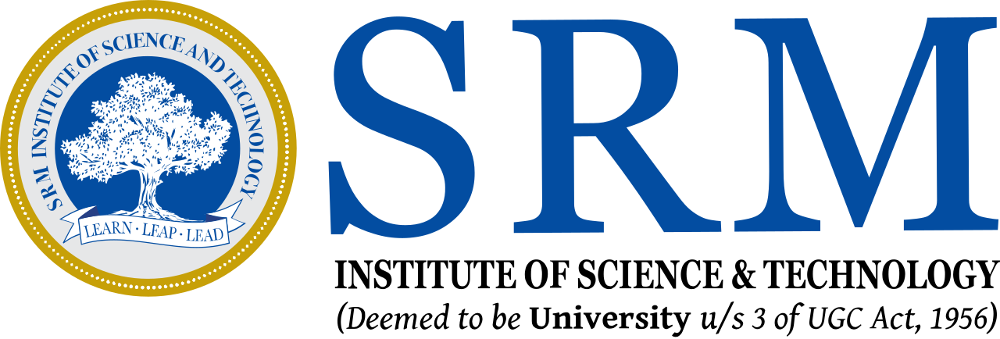

SRM Institute of Science and Technology is one of India's larger and more research-active engineering universities, ranked among the top engineering institutions in the country and consistently placed in the QS Asia and Times Higher Education global rankings. The Electronics and Communication Engineering program is a four-year program covering circuits, signals, communication systems, embedded systems, microprocessors, and the math foundations underneath all of it. Heavy on first-principles, heavy on labs, heavy on the kind of structured problem-solving that engineering programs are built to teach.
Engineering taught me how to think in systems. Every circuit, every signal chain, every communication protocol is essentially the same exercise repeated at different scales. Decompose the problem, isolate the variables, understand how each piece connects to the next, and figure out where the system is most likely to fail. That habit has stayed with me through every analytics role since. The technical content of an ECE degree may not look obviously connected to business analytics, but the underlying thinking is the same.
The other thing SRM gave me was the volume of work. A large, demanding engineering program forces you to operate under sustained pressure across semesters of dense material, group projects, lab work, and competitive exams. You learn how to prioritize, how to ask for help, how to keep moving when a problem stays stuck for days. Those are the skills that ended up mattering far more in industry than any specific course content.
The most rewarding piece of the four years was my final-year research project, where my team designed and analyzed a Cu₂CdSnS₄ thin-film kesterite solar cell for terrestrial applications. The project placed first in the department and was later published. It was the first time I saw a long research effort move from a vague brief through experiments and modeling to a finished, defensible piece of work, and it set the bar for how I approach a complex problem to this day.